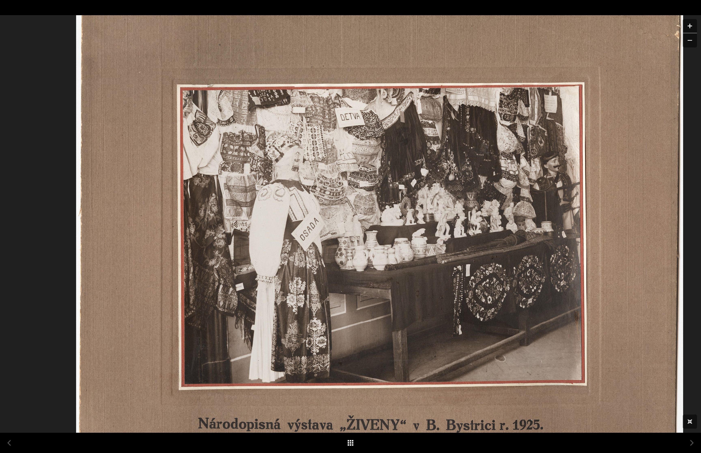

Obrazový archív
Obrazy Lipy.
Historické fotografie z činnosti Lipy, výstav a vyšívkárok — zbierka sa postupne dopĺňa.
1910 – 1912
Výstavná sieň
T. Sv. Martin
T. Sv. Martin
cca 1913
Výšivačky
Hontianska župa
Hontianska župa
1912
Výstava · Košice
strieborná medaila
strieborná medaila
Portrét
E. Maróthy-Šoltésová
predsedníčka Živeny
predsedníčka Živeny
1913
Výstava ľudových
výšiviek · Viedeň
výšiviek · Viedeň
cca 1916
Ľudové kroje
Zvolenská župa
Zvolenská župa
1927 – 1938
Predajňa Lipy
Bratislava
Bratislava
cca 1911
Tylové výšivky
Bratislavská župa
Bratislavská župa
1915
Výstava krojov
Praha · Obecný dom
Praha · Obecný dom
1925
Národopisná výstava
Banská Bystrica
Banská Bystrica
